これは見本です（本番は変えていません）。前の見本へのあなたの答え（案 2）を入れて作り直しました。「新しい」の合計点 ＝ 外の点数（AniList のお気に入り数・Wikipedia の直近 90 日の閲覧数）＋ 公式の人気投票の順位 ＋ ゲームで使えるキャラ ＋ その版面の記事に出た回数。同時に、人の大きさをそろえた形（顔の幅＝枠の 4 割・目の線＝枠の上から 36%・4:5）も見せています。
- 公式の人気投票：Fandom の「Popularity polls」ページの最新の回（BLEACH は 49 位まで）。1 位 +1.2、30 位で 0。ない版面は 0。
- ゲームで使える：見出しに roster・lineup・参戦などがある記事の本文に名前が出た人 +1.5。記事に出た回数：直近 30 日の見出し・要約に名前（+0.5×log10(1+回数)、上限 1.0）。
- 顔が見つからない絵は「人物にしない」と書いて元の大きさのまま出しています。顔だけのアップ（顔が高さの 5 割超）は注意を付けています。まだ入れていないもの：公式サイトの胸像への差し替え・絵柄をそろえる（CLIP）・体の穴や吹き出しの残りの点検。
BLEACH Mirrors High94 枚のうち
いま名簿の順の先頭 19 枚・元の絵のまま（赤＝新しい選び方では出ない）


新しい合計点の上位 12 枚・顔の大きさと目の高さをそろえた胸像（金＝いまは出ていない）
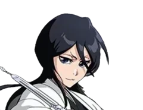
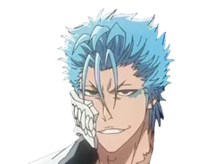
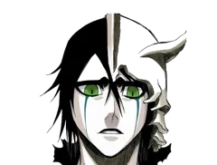
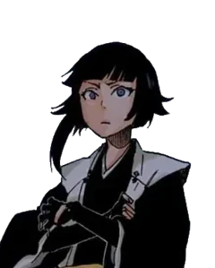
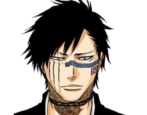
チェーンソーマン18 枚のうち
いま名簿の順の先頭 12 枚・元の絵のまま（赤＝新しい選び方では出ない）


新しい合計点の上位 12 枚・顔の大きさと目の高さをそろえた胸像（金＝いまは出ていない）
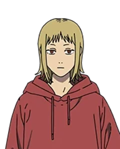
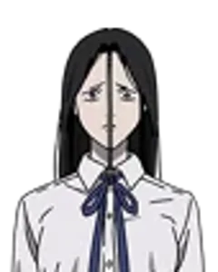

哈利波特剧集13 枚のうち
いま名簿の順の先頭 12 枚・元の絵のまま（赤＝新しい選び方では出ない）


新しい合計点の上位 12 枚・顔の大きさと目の高さをそろえた胸像（金＝いまは出ていない）
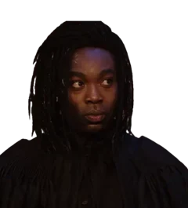
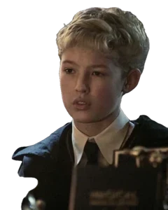
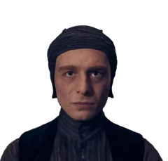
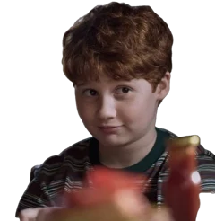